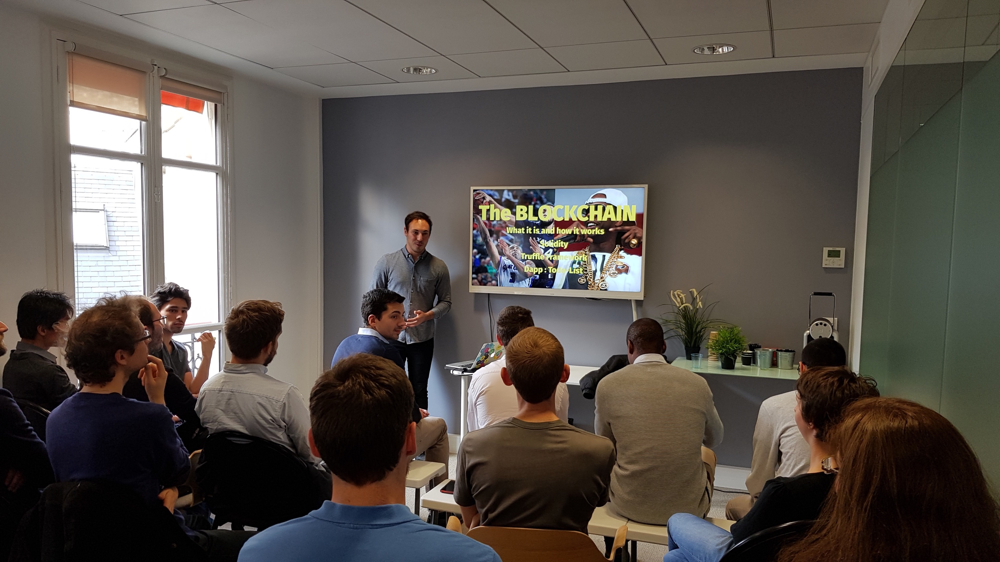

Les 4 choses que j'ai apprises après mon premier talk technique

La semaine dernière j'ai donné mon deuxième talk sur le développement JavaScript, où j'ai parlé de Truffle et Solidity à un groupe de développeurs de chez JS-Republic. J'ai été très content du résultat et j'espère être capable de continuer à en faire dans le futur. Voici les conseils que je…